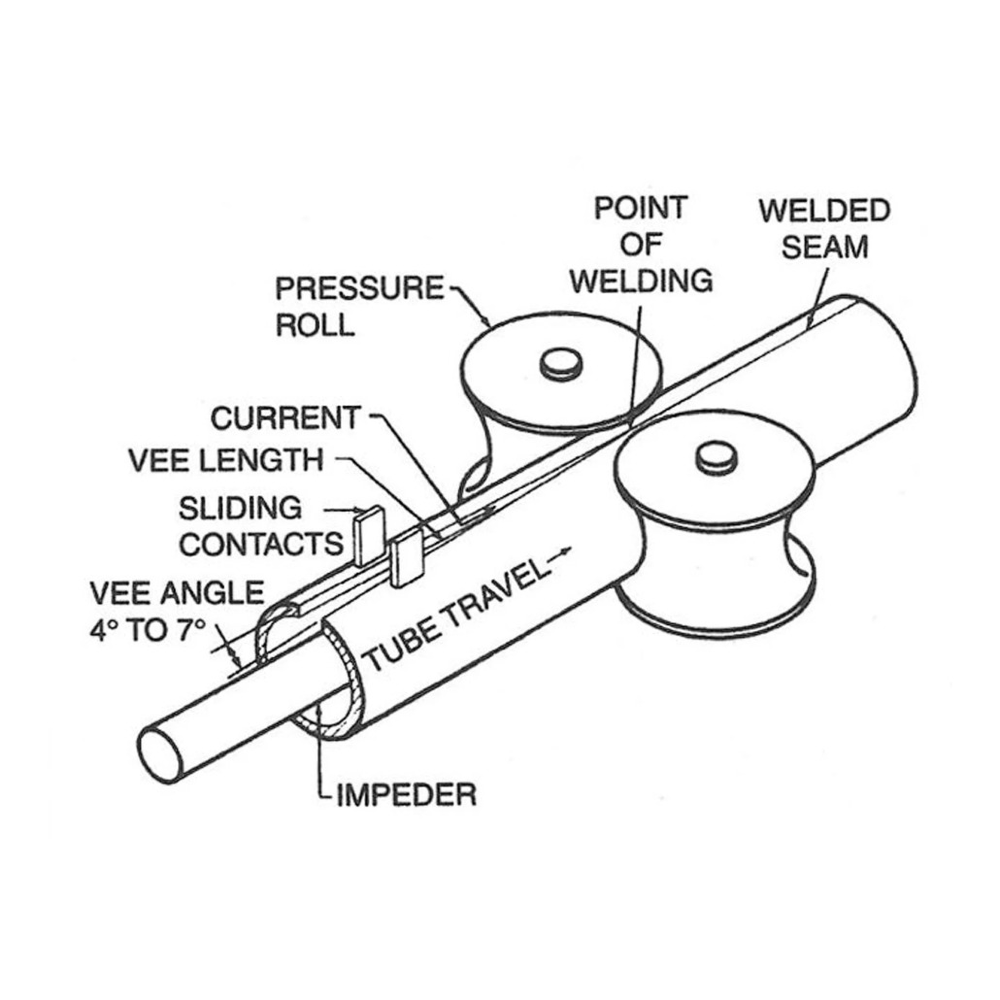
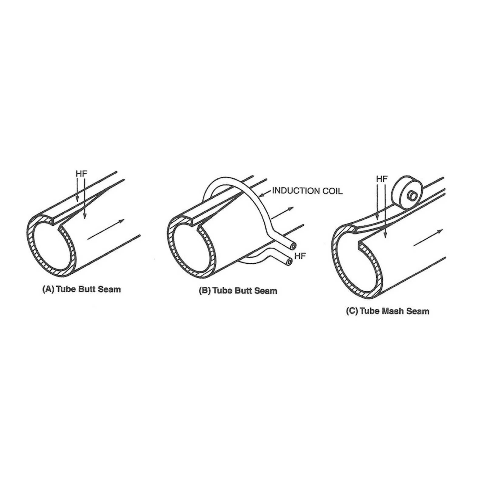
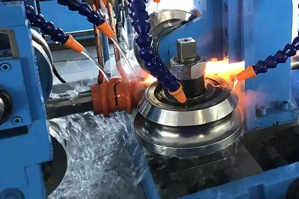
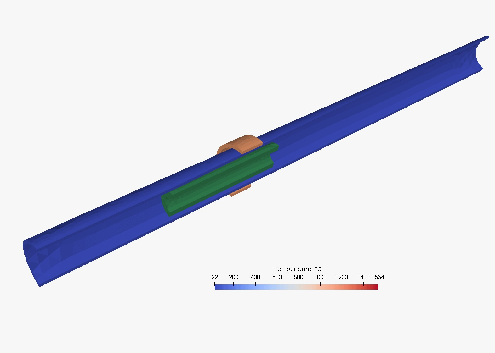

1. Executive Summary
High-Frequency Induction (HFI) welding stands as the backbone of the global tube and pipe manufacturing industry. This project explores the integration of electromagnetic induction as a primary joining method, capable of producing high-integrity longitudinal seams at speeds that far exceed traditional arc welding methods.
Beyond simple joining, HFI welding for steamed pipes requires a rigorous adherence to metallurgical stability to withstand fluctuating thermal loads and internal pressures. By eliminating filler metals and minimizing the Heat Affected Zone (HAZ), this process ensures that the finished product retains the chemical and mechanical properties of the base parent metal.2. Introduction to Induction Welding
Induction welding is a sophisticated application of electromagnetism and fluid dynamics used to join the edges of a metal strip into a continuous hollow profile. The process involves passing a high-frequency alternating current (typically 150 kHz to 450 kHz) through a copper induction coil. This coil creates a rapidly oscillating magnetic field which induces "Eddy Currents" within the metal strip.
The "Magic" of HFI Welding
- The Skin Effect: As frequency increases, the induced current is forced to flow only on the thin outer "skin" of the metal, leading to rapid heating with minimal power loss to the core.
- The Proximity Effect: When the two edges of the formed strip approach each other in a "V" shape, the current naturally concentrates along those meeting edges.
This concentration allows edges to reach a forging state (1300°C to 1450°C) in milliseconds. Because the heating is so localized, it prevents the widespread distortion or "warping" commonly seen in TIG or MIG welding.

3. System Components & Setup
- HF Power Supply: A high-output inverter that generates the required frequency.
- Induction Coil: A custom-shaped copper workhead that transfers energy to the pipe.
- Impedor (Ferrite Core): A magnetic tool placed inside the tube to focus current on the weld "Vee".
- Squeeze Rolls: Heavy-duty rollers that provide the mechanical forge pressure needed to bond the molten edges.
- Seam Guide: A ceramic blade or roller ensuring the weld gap is perfectly centered as it enters the coil.

4. Manufacturing Process Flow
- Forming: Flat steel strip is progressively bent into a round "open" shell.
- Induction Heating: The coil heats the converging edges via electromagnetic induction.
- Forging: Squeeze rolls press edges together, extruding "flash" (excess metal) for a clean bond.
- Scarfing: The hot flash is shaved off internally and externally.
- Cooling: The pipe is water-cooled to stabilize dimensions.
- Sizing & Shaping: For square tubes, round pipe is passed through "Turks Head" rolls to form 90-degree corners.

5. Technical Specifications & Quality Control
| Parameter | Steamed Pipe (Pressure) | Square Tube (Structural) |
|---|---|---|
| Material Standard | API 5L/ASTM A53 | ASTM A500 Grade B/C |
| Testing | Hydrostatic + Ultrasonic | Eddy Current + Flare Test |
Quality Control Measures
- Eddy Current Testing: An in-line NDT method that flags weld discontinuities instantly.
- Hydrostatic Testing: Vital for steamed pipes; the pipe is pressurized with water to ensure zero leakage.


6. Post-Weld Heat Treatment
For steam-carrying pipes, the weld area becomes "quenched" and brittle. We implement Seam Normalizing using a secondary induction unit to reheat the seam to 900°C. This refines the grain structure, ensuring the weld can handle the expansion and contraction of high-heat steam environments.
7. Multimedia Demonstrations
The following video demonstrations illustrate the HFI principles, equipment setup, and high-speed production environments.
8. References
Asahi, H. (2017). High-frequency induction welding of steel pipes. In J. Lawrence (Ed.), Advances in Laser Materials Processing (2nd ed., pp. 581-605). Woodhead Publishing.
Grover, G. S., & Singh, R. (2020). Analysis of heat affected zone in induction welded tubes. International Journal of Modern Manufacturing Technologies, 12(1), 45-52.
Rudnev, V., Loveless, D., & Cook, R. (2017). Handbook of Induction Heating (2nd ed.). CRC Press.
Scott, J. (2018). Principles of High-Frequency Welding. Industrial Press Inc.
Zinn, S., & Semiatin, S. L. (1988). Elements of Induction Heating: Design, Control, and Applications. ASM International.